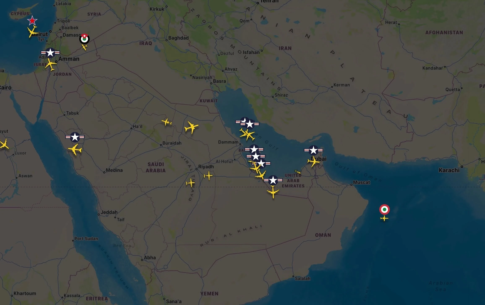
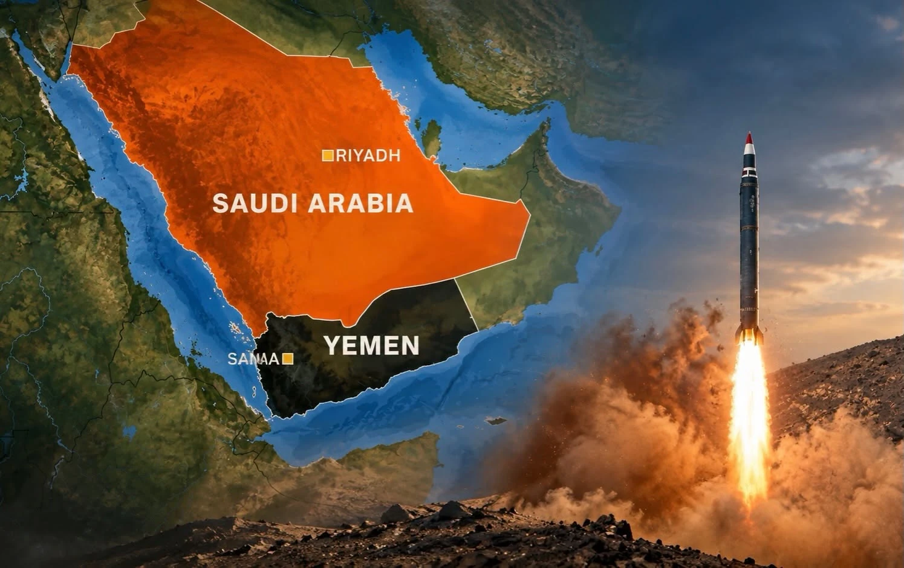
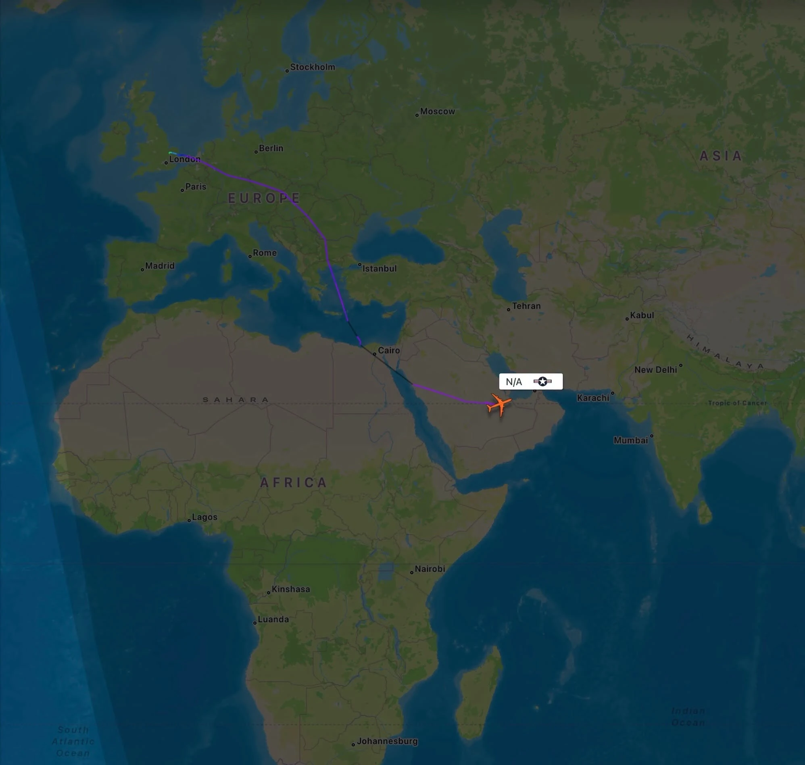
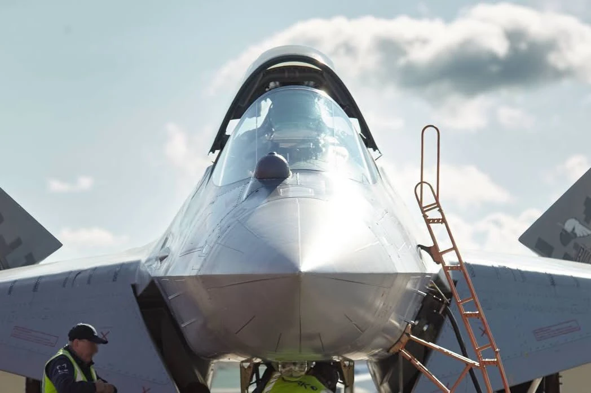
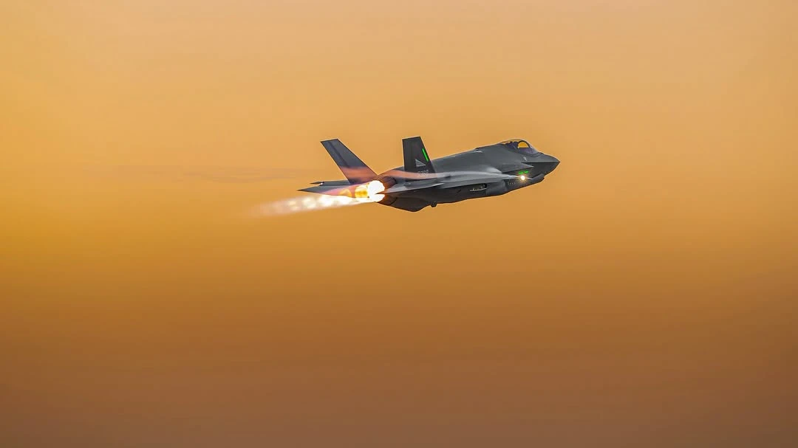
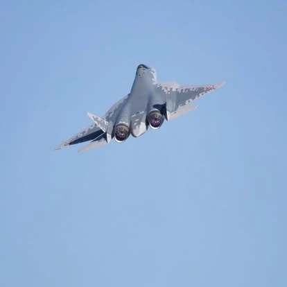

الرصد الاستخباري مفتوح المصدر (OSINT)
متابعة مستمرة لحركة الطيران العسكري، مسارات النقل الاستراتيجي، وصور الأقمار الصناعية فوق مسارح العمليات الإقليمية والدولية.
نحلّل الصراعات، نفكك الأحداث، ونقدّم قراءة معمّقة للشأن العسكري في العراق والعالم، بإدارة عسكريين وباحثين مختصين. نرتكز على الاستخبارات مفتوحة المصدر (OSINT)، تفكيك المنظومات التسليحية، والقراءة الميدانية المحايدة.
خلية أبحاث عسكرية إستراتيجية مستقلة انطلقت من العاصمة العراقية بغداد عام 2015 لتسد الفجوة في الدراسات الدفاعية والعملياتية باللغة العربية.
«نحلّل الصراعات، نفكك الأحداث، ونقدّم قراءة معمّقة للشأن العسكري في العراق والعالم، بإدارة عسكريين وباحثين مختصين.»
تعتمد الخلية التكتيكية (Tactical Cell) معايير صارمة من الحيادية العلمية والاستقلالية التامة. في ظل تسارع المتغيرات الجيوسياسية وتطور أجيال الحروب الهجينة والسيبرانية والجوية، يقدّم فريقنا المؤلف من عسكريين ذوي خبرة ميدانية وباحثين في الشؤون الإستراتيجية قراءات استشرافية ترتكز على البيانات التقنية الموثقة لا الانطباعات الإعلامية.
متابعة مستمرة لحركة الطيران العسكري، مسارات النقل الاستراتيجي، وصور الأقمار الصناعية فوق مسارح العمليات الإقليمية والدولية.
دراسة هندسية وتكتيكية معمّقة للمقاتلات، الرادارات، الصواريخ الباليستية، ومنظومات الدفاع الجوي والحرب الإلكترونية.
تدقيق المعطيات الميدانية عبر مصادر متعددة واستبعاد الدعاية الحربية للوصول إلى حقيقة الموقف العملياتي على الأرض.
بناء سيناريوهات مستقبلية مبنية على موازين القوى، العقائد القتالية، والقدرات اللوجستية للأطراف الفاعلة.

توثيق وتحليل فوري لتحركات طائرات الاستطلاع الإلكتروني، طائرات التزود بالوقود جواً، والدوريات القتالية في أجواء العراق، المشرق العربي، والخليج العربي.
تغطي الخلية التكتيكية ستة مسارات رئيسية تتكامل فيها العلوم العسكرية التطبيقية مع التحليل الجيوسياسي والأمني.
تفكيك ديناميكيات الحروب المعاصرة، خطوط التماس، تكتيكات القتال الحضري والصحراوي، وتقييم الأداء العملياتي للقوات المسلحة في العراق والإقليم والعالم.
تتبع مسارات الطيران العسكري الإستراتيجي، طائرات الإنذار المبكر (AWACS)، طائرات الاستطلاع (ISR)، والجسور الجوية اللوجستية العابرة للقارات.
دراسات مقارنة لمقاتلات الجيل الرابع المتقدم والجيل الخامس (F-35، Su-57، Eurofighter)، البصمة الرادارية، وإلكترونيات الطيران المتقدمة.
قراءة علمية في قدرات الصواريخ الباليستية والجوالة وفرط الصوتية، مقابل شبكات الدفاع الجوي الطبقي ومنظومات الاعتراض الصاروخي.
تحليل دور المسيّرات الاستطلاعية والهجومية والذخائر الجوالة في تغيير عقائد الاشتباك البري والبحري، وأساليب الإعاقة والتشويش الكهرومغناطيسي.
موازنة شاملة بين العقائد العسكرية الشرقية والغربية، وبرامج التحديث العسكري وبناء القدرات الدفاعية في العراق والمنطقة.
ملفات تحليلية موثقة بالخرائط والصور التقنية من إعداد فريق العسكريين والباحثين المختصين في الخلية التكتيكية. اضغط على أي ملف لقراءة الملخص التحليلي الكامل.
تفكيك لأنماط انتشار طائرات الاستطلاع الإلكتروني والتزود بالوقود جواً في الأجواء الإقليمية، ودلالات التموضع العملياتي في أوقات التصعيد.

دراسات صاروخية وجيوسياسيةتحليل معمّق لمديات الصواريخ الباليستية وتأثيرها على الأمن الإقليمي والممرات البحرية، وكفاءة منظومات الاعتراض الصاروخي على الارتفاعات العالية.

نقل إستراتيجي • AIRLIFTرصد وتحليل مسارات الرحلات العسكرية طويلة المدى المنطلقة من المملكة المتحدة وأوروبا عبر المتوسط والبحر الأحمر وصولاً إلى قواعد الخليج.
 مقاتلات الجيل الخامس
مقاتلات الجيل الخامس
دراسة تقنية معمّقة لقدرات التخفي الراداري، منظومة الحرب الإلكترونية المدمجة، ودور مقاتلات الجيل الخامس كعقدة قيادة وتوجيه متقدمة.

إلكترونيات الطيران • AVIONICSتشريح هندسي لمستشعرات المقدمة الكهروبصرية والرادارية في المقاتلات الأوروبية والغربية، ودورها في الكشف السلبي دون إصدار نبضات رادارية.
 العقائد الجوية المقارنة
العقائد الجوية المقارنة
مقارنة علمية بين فلسفة التصميم الروسية القائمة على المناورة الفائقة والسرعة الصوتية، والفلسفة الغربية المرتكزة على التخفي الشامل.
توثيق بصري من أرشيف الخلية التكتيكية يشمل خرائط التتبع الجوي، دراسات الصواريخ الاستراتيجية، وتفكيك المنظومات الجوية.
رصد فوري لتحركات الطيران العسكري وطائرات التزود بالوقود والاستطلاع في أجواء المنطقة.
تحليل جغرافي وعسكري لمديات الصواريخ الباليستية ومنظومات الدفاع الجوي الإقليمي.
توثيق مسارات الرحلات العسكرية طويلة المدى عبر المتوسط والبحر الأحمر وصولاً للخليج العربي.
دراسة تفصيلية لمستشعرات المقدمة الكهروبصرية وأنظمة الكشف السلبي في الطائرات المقاتلة.
5TH-GEN • مقاتلة F-35
قراءة في كفاءة محرك Pratt & Whitney F135 والبصمة الحرارية والرادارية أثناء المناورة.
EASTERN DOCTRINE • مقاتلة Su-57
تحليل البدن المدمج وحواضن التسليح الداخلية والمحركات ذات الدفع الموجه ثلاثي الأبعاد.

SEAD / DEAD • اختراق الدفاعاتتقييم تكتيكات استخدام المقاتلات الشبحية في تحييد رادارات الإنذار المبكر في الساعات الأولى للصراع.

BVR COMBAT • اشتباك خلف مدى الرؤيةقراءة في تكامل صواريخ الاشتباك بعيد المدى مع رادارات المصفوفة النشطة في المعارك الجوية الحديثة.
أكثر من عشر سنوات من العمل البحثي العسكري المستقل بإدارة عسكريين وباحثين مختصين في بغداد.
تحظى الخلية التكتيكية بثقة مئات الآلاف من المتابعين والضباط والباحثين في الشأن العسكري بفضل التزامها بالحيادية والدقة العلمية.
«السادة العاملون بهذه الصفحة خبراء بكل ما للكلمة من معنى، تحليل منطقي واستشراف لمستقبل العمليات العسكرية ودراسة مستفيضة للأسلحة والتقنيات.»
«المهنية والدقة والحيادية والصدق في نقل الأخبار الدقيقة من أبرز مميزات الصفحة.»
«المهنية والحيادية والدقة في تحليل ونقل الأخبار جعلتني أترك كل القنوات والاكتفاء بهذه الصفحة فقط.»
«صفحة متميزة جداً معلوماتها قيمة جداً، وتقدم قراءة علمية رصينة للأحداث العسكرية الجارية.»
«تحاليل ممتازة وغير منحازة، وقراءة قريبة من الواقع الميداني بعيداً عن التهويل الإعلامي.»
«قناة محايدة ومعلومات دقيقة وصادقة بمنشوراتها وتفكيكها للتطورات العسكرية.»
إجابات وافية حول طبيعة عمل الخلية التكتيكية، منهجية التحقق من المصادر، وآليات التواصل للأبحاث والاستشارات.
للتعاون البحثي، الاستفسارات الإعلامية، أو إرسال التقارير والدراسات العسكرية، تواصلوا معنا مباشرة عبر القنوات الرسمية المعتمدة.
فريقنا من العسكريين والباحثين المختصين في بغداد يستقبل مراسلاتكم البحثية والاستشارية عبر البريد الرسمي ومنصات التواصل.
بغداد، العراق — Baghdad, Iraq
تأسست عام 2015 — رصد وتحليل مستمر
أرسل استفسارك أو طلب التعاون البحثي مباشرة إلى فريق الخلية التكتيكية.